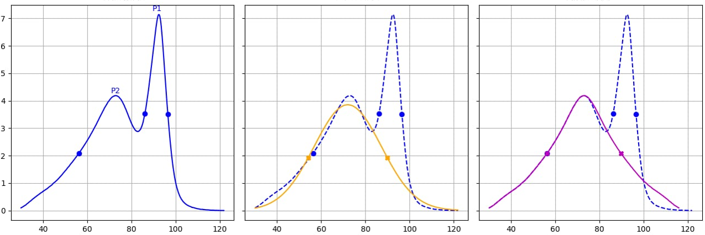
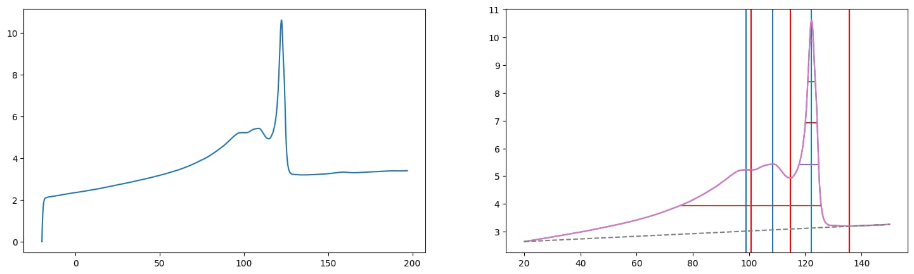

During braskem internship a lot of projects were developed, and basically every single project required Python for it development,
along with python other libraries/frameworks were also used, these are going to be mentioned in the projects description below.
Also, since the projects were done inside a company, they are protected with Non Disclosure Agreement (NDA), and because of that
some sensitive information about the project will not be shared here.
I appreciate your interest in my journey!
Bimodal Peak Deconvolution
There was a task, where a certain type of data should be retrieved from peaks in signals, but sometimes these peaks were merged togheter
(when a signal has two peaks it is called bimodal). So this project aimed to take those bimodal signals and make a deconvolution of the peaks in it
returning what the peak would be without the interference of another. So by having the "clean" peak, it was possible to retrieve the desired information
from the peaks.
●pandas
●numpy
●scikit-learn
●scipy
●Machine Learning

ML Singal Comparator
We have a huge set of sigals from a certain analsys technique, each one different from another. And often we receive a new signal,
which can be different from the other or very similar to one of them, and this new peak should be classified taking that in consideration.
This task of classifying the new signal was done manually by one of the analysts, and considering that we have an enormous set of signal, this task is
extremely difficult and laborious. Knowing that, this project aimed to develop a ML model, trained with the original signals and classify the new signal
based on the orignals.
●pandas
●numpy
●scikit-learn
●scipy
●dataiku

RPA Extracting
Since braskem is also a research company, it has a lot of equipament to run analytical techniques, and often these equipament have their own software
to treat the data the equipament generate. Since braskem is a huge company, a lot of analysis are done and takes a lot of time to work manually on those
softwares to extract the data generated by the equipament. Hence, to save analists time, soma automations (RPA) were developed to extract the data automagically
from the softwares. Also, some automations envolved extract data from files such as pdfs and images.
●tkinter
●pyautogui
●tesseract
●OpenCV
Utils Functions
Even if all of the projects didnt work out as expected, in a way or another those projects generated knowledge. Considering that, some parts on the projects
were tranformed in functions and keeped separated, in that way we can reuse the code in a future project without having the work of coding it all again.
Those functions envolves every kind of task, since image editing, to str comparator or even matrix sampling. The functions were all commented and well documented.
●all of the technologies above and probaably more